数据可视化分析
Python 的另一大优势就是自动化处理。它可以使你在处理较为复杂的工作时，节省大量的时间。
本篇给大家介绍一个数据分析的初级项目，目的是通过项目了解如何使用Python进行简单的数据分析。
1 数据初探
首先导入要使用的科学计算模块 numpy, pandas,可视化matplotlib, seaborn,以及机器学习模块 sklearn。
import pandas as pd
import numpy as np
import seaborn as sns
import matplotlib as mpl
import matplotlib.pyplot as plt
from IPython.display import display
plt.style.use("fivethirtyeight")
sns.set_style({'font.sans-serif': ['simhei', 'Arial']})
# 检查Python版本
from sys import version_info
if version_info.major != 3:
raise Exception('请使用Python 3 来完成此项目')
然后导入数据，并进行初步的观察，这些观察包括了解数据特征的缺失值，异常值，以及大概的描述性统计。
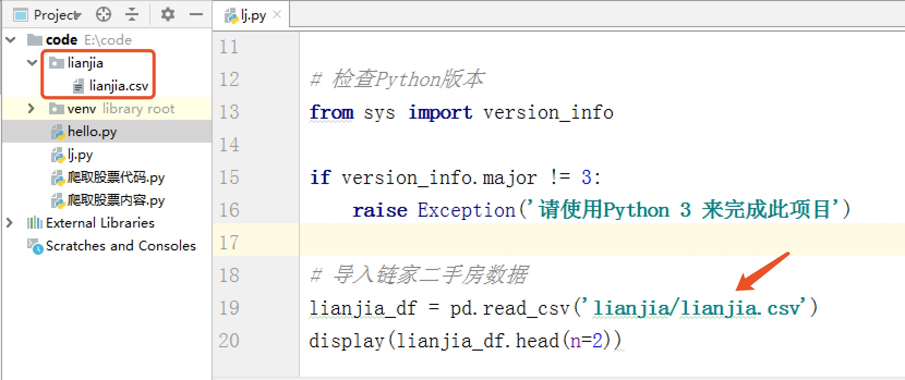
# 导入链家二手房数据
lianjia_df = pd.read_csv('lianjia/lianjia.csv')
display(lianjia_df.head(n=2))
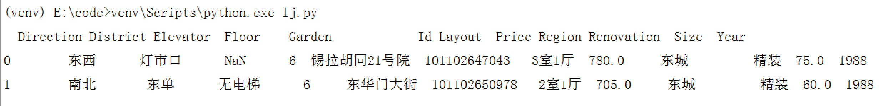
初步观察到一共有12个特征变量，Price 在这里是我们的目标变量，然后我们继续深入观察一下。
# 检查缺失值情况
print(lianjia_df.info())
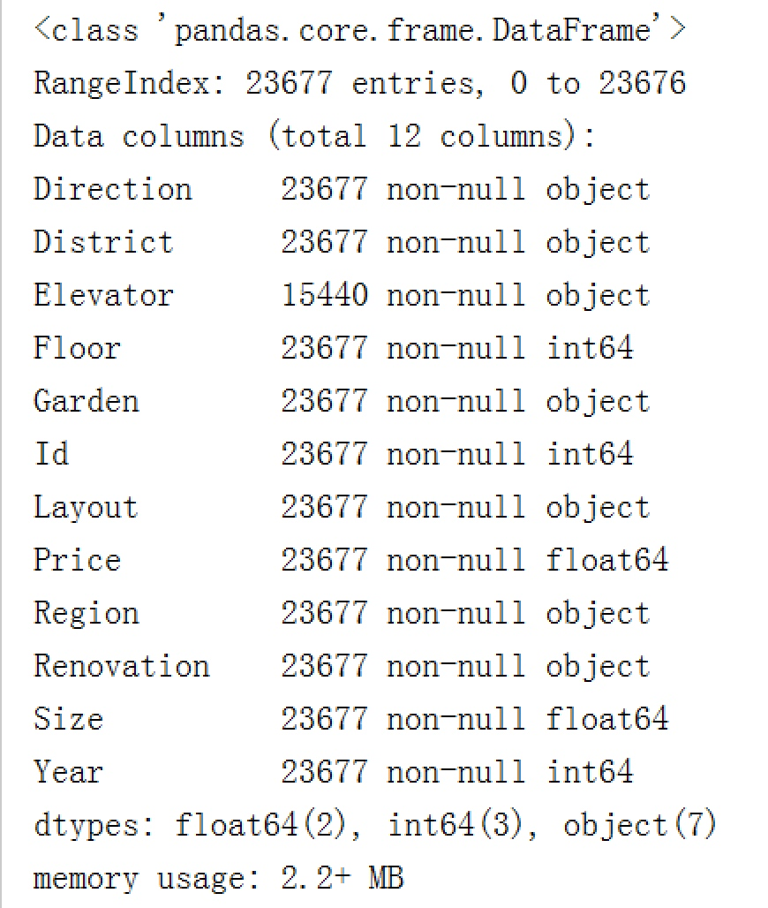
发现了数据集一共有23677条数据，其中Elevator特征有明显的缺失值。
print(lianjia_df.describe())
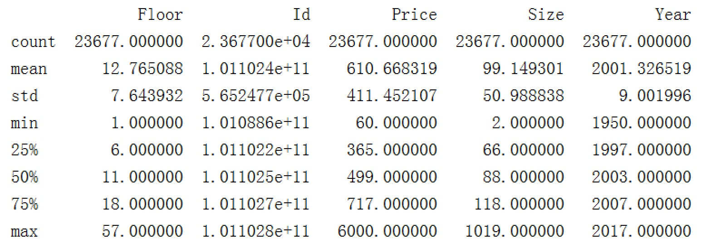
上面结果给出了特征值是数值的一些统计值，包括平均数，标准差，中位数，最小值，最大值，25%分位数，75%分位数。这些统计结果简单直接，对于初始了解一个特征好坏非常有用，比如我们观察到 Size 特征 的最大值为1019平米，最小值为2平米，那么我们就要思考这个在实际中是不是存在的，如果不存在没有意义，那么这个数据就是一个异常值，会严重影响模型的性能。
当然，这只是初步观察，后续我们会用数据可视化来清晰的展示，并证实我们的猜测。
# 添加新特征房屋均价
df = lianjia_df.copy()
df['PerPrice'] = lianjia_df['Price']/lianjia_df['Size']
# 重新摆放列位置
columns = ['Region', 'District', 'Garden', 'Layout', 'Floor', 'Year', 'Size', 'Elevator', 'Direction', 'Renovation', 'PerPrice', 'Price']
df = pd.DataFrame(df, columns = columns)
# 重新审视数据集
display(df.head(n=2))
我们发现 Id 特征其实没有什么实际意义，所以将其移除。由于房屋单价分析起来比较方便，简单的使用总价/面积就可得到，所以增加一个新的特征 PerPrice（只用于分析，不是预测特征）。另外，特征的顺序也被调整了一下，看起来比较舒服。
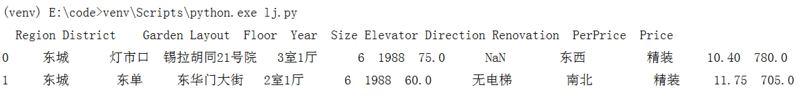
2 数据可视化分析
2.1 Region特征分析
对于区域特征，我们可以分析不同区域房价和数量的对比。
# 对二手房区域分组对比二手房数量和每平米房价
df_house_count = df.groupby('Region')['Price'].count().sort_values(ascending=False).to_frame().reset_index()
df_house_mean = df.groupby('Region')['PerPrice'].mean().sort_values(ascending=False).to_frame().reset_index()
f, [ax1,ax2,ax3] = plt.subplots(3,1,figsize=(20,15))
sns.barplot(x='Region', y='PerPrice', palette="Blues_d", data=df_house_mean, ax=ax1)
ax1.set_title('北京各大区二手房每平米单价对比',fontsize=15)
ax1.set_xlabel('区域')
ax1.set_ylabel('每平米单价')
sns.barplot(x='Region', y='Price', palette="Greens_d", data=df_house_count, ax=ax2)
ax2.set_title('北京各大区二手房数量对比',fontsize=15)
ax2.set_xlabel('区域')
ax2.set_ylabel('数量')
sns.boxplot(x='Region', y='Price', data=df, ax=ax3)
ax3.set_title('北京各大区二手房房屋总价',fontsize=15)
ax3.set_xlabel('区域')
ax3.set_ylabel('房屋总价')
plt.show()
使用了pandas的网络透视功能 groupby 分组排序。区域特征可视化直接采用 seaborn 完成，颜色使用调色板 palette 参数，颜色渐变，越浅说明越少，反之越多。
可以观察到：
- 二手房均价：西城区的房价最贵均价大约11万/平，因为西城在二环以里，且是热门学区房的聚集地。其次是东城大约10万/平，然后是海淀大约8.5万/平，其它均低于8万/平。
- 二手房房数量：从数量统计上来看，目前二手房市场上比较火热的区域。海淀区和朝阳区二手房数量最多，差不多都接近3000套，毕竟大区，需求量也大。然后是丰台区，近几年正在改造建设，有赶超之势。
- 二手房总价：通过箱型图看到，各大区域房屋总价中位数都都在1000万以下，且房屋总价离散值较高，西城最高达到了6000万，说明房屋价格特征不是理想的正太分布。
2.2 Size特征分析
f, [ax1,ax2] = plt.subplots(1, 2, figsize=(15, 5))
# 建房时间的分布情况
sns.distplot(df['Size'], bins=20, ax=ax1, color='r')
sns.kdeplot(df['Size'], shade=True, ax=ax1)
# 建房时间和出售价格的关系
sns.regplot(x='Size', y='Price', data=df, ax=ax2)
plt.show()
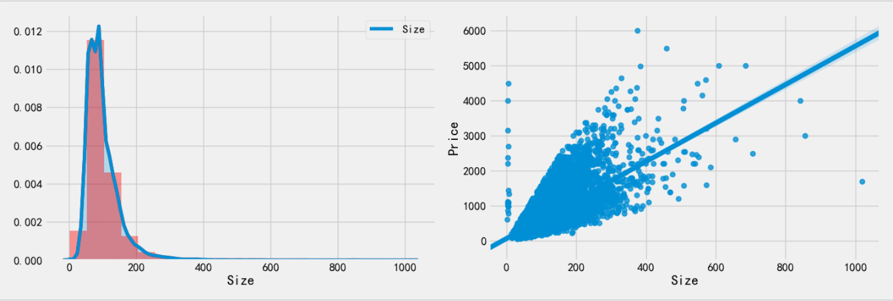
- Size 分布：
通过 distplot 和 kdeplot 绘制柱状图观察 Size 特征的分布情况，属于长尾类型的分布，这说明了有很多面积很大且超出正常范围的二手房。 - Size 与 Price 的关系
通过 regplot 绘制了 Size 和 Price 之间的散点图，发现 Size 特征基本与Price呈现线性关系，符合基本常识，面积越大，价格越高。但是有两组明显的异常点：1. 面积不到10平米，但是价格超出10000万；2. 一个点面积超过了1000平米，价格很低，需要查看是什么情况。
print(df.loc[df['Size']< 10])
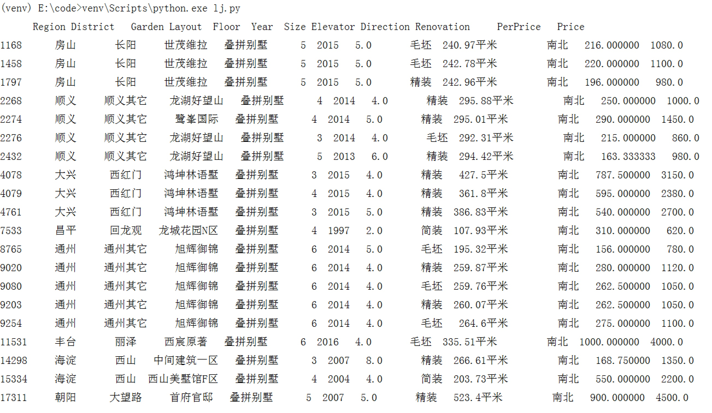
经过查看发现这组数据是别墅，出现异常的原因是由于别墅结构比较特殊（无朝向无电梯），字段定义与二手商品房不太一样导致爬虫爬取数据错位。也因别墅类型二手房不在我们的考虑范围之内，故将其移除再次观察Size分布和Price关系。
print(df.loc[df['Size']>1000])
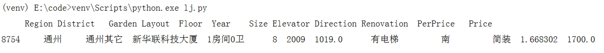
经观察这个异常点不是普通的民用二手房，很可能是商用房，所以才有1房间0厅确有如此大超过1000平米的面积，这里选择移除。
df = df[(df['Layout']!='叠拼别墅')&(df['Size']<1000)]
plt.show()
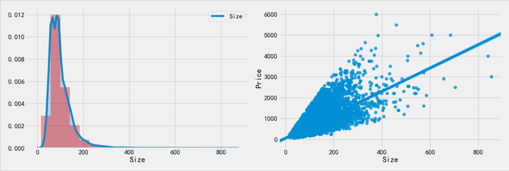
重新进行可视化发现就没有明显的异常点了。
2.3 Layout特征分析
f, ax1= plt.subplots(figsize=(20,20))
sns.countplot(y='Layout', data=df, ax=ax1)
ax1.set_title('房屋户型',fontsize=15)
ax1.set_xlabel('数量')
ax1.set_ylabel('户型')
plt.show()
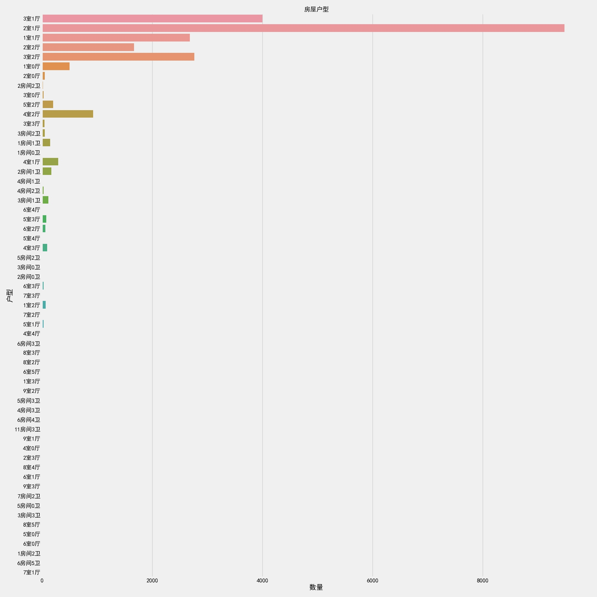
这个特征真是不看不知道，各种厅室组合搭配，竟然还有9室3厅，4室0厅等奇怪的结构。其中，2室一厅占绝大部分，其次是3室一厅，2室2厅，3室两厅。但是仔细观察特征分类下有很多不规则的命名，比如2室一厅与2房间1卫，还有别墅，没有统一的叫法。这样的特征肯定是不能作为机器学习模型的数据输入的，需要使用特征工程进行相应的处理。
2.4 Renovation 特征分析
print(df['Renovation'].value_counts())
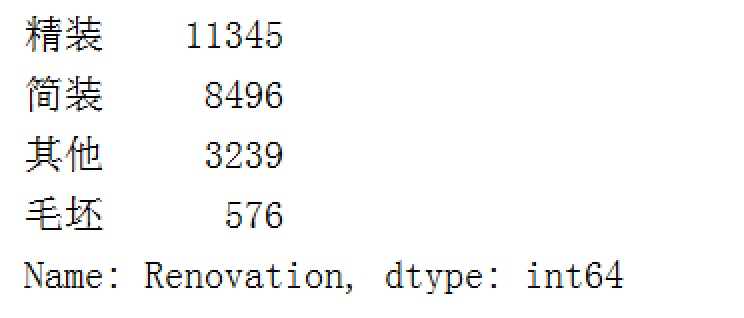
# 画幅设置
f, [ax1,ax2,ax3] = plt.subplots(1, 3, figsize=(20, 5))
sns.countplot(df['Renovation'], ax=ax1)
sns.barplot(x='Renovation', y='Price', data=df, ax=ax2)
sns.boxplot(x='Renovation', y='Price', data=df, ax=ax3)
plt.show()
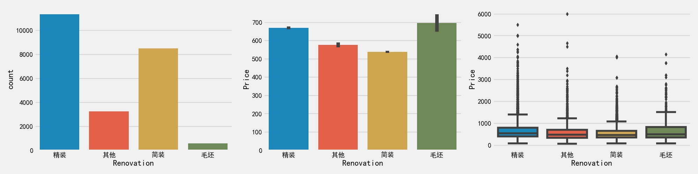
观察到，精装修的二手房数量最多，简装其次，也是我们平日常见的。而对于价格来说，毛坯类型却是最高，其次是精装修。
2.5 Elevator特征分析
初探数据的时候，我们发现 Elevator 特征是有大量缺失值的，这对于我们是十分不利的，首先我们先看看有多少缺失值：
misn = len(df.loc[(df['Elevator'].isnull()), 'Elevator'])
print('Elevator缺失值数量为：'+ str(misn))
Elevator 缺失值数量为：8237
这么多的缺失值怎么办呢？这个需要根据实际情况考虑，常用的方法有平均值/中位数填补法，直接移除，或者根据其他特征建模预测等。
这里我们考虑填补法，但是有无电梯不是数值，不存在平均值和中位数，怎么填补呢？这里给大家提供一种思路：就是根据楼层 Floor 来判断有无电梯，一般的楼层大于6的都有电梯，而小于等于6层的一般都没有电梯。有了这个标准，那么剩下的就简单了。
# 由于存在个别类型错误，如简装和精装，特征值错位，故需要移除
df['Elevator'] = df.loc[(df['Elevator'] == '有电梯')|(df['Elevator'] == '无电梯'), 'Elevator']
# 填补Elevator缺失值
df.loc[(df['Floor']>6)&(df['Elevator'].isnull()), 'Elevator'] = '有电梯'
df.loc[(df['Floor']<=6)&(df['Elevator'].isnull()), 'Elevator'] = '无电梯'
f, [ax1,ax2] = plt.subplots(1, 2, figsize=(20, 10))
sns.countplot(df['Elevator'], ax=ax1)
ax1.set_title('有无电梯数量对比',fontsize=15)
ax1.set_xlabel('是否有电梯')
ax1.set_ylabel('数量')
sns.barplot(x='Elevator', y='Price', data=df, ax=ax2)
ax2.set_title('有无电梯房价对比',fontsize=15)
ax2.set_xlabel('是否有电梯')
ax2.set_ylabel('总价')
plt.show()
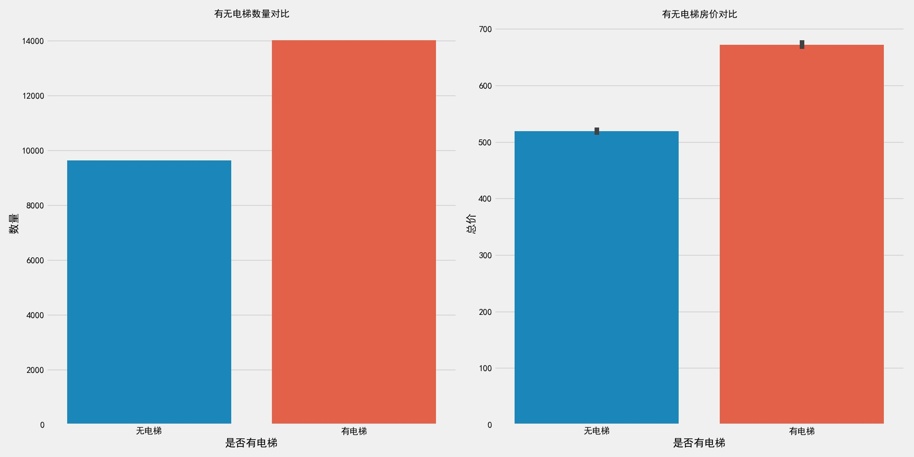
结果观察到，有电梯的二手房数量居多一些，毕竟高层土地利用率比较高，适合北京庞大的人群需要，而高层就需要电梯。相应的，有电梯二手房房价较高，因为电梯前期装修费和后期维护费包含内了（但这个价格比较只是一个平均的概念，比如无电梯的6层豪华小区当然价格更高了）。
2.6 Year特征分析
grid = sns.FacetGrid(df, row='Elevator', col='Renovation', palette='seismic',height=4)
grid.map(plt.scatter, 'Year', 'Price')
grid.add_legend()
plt.show()
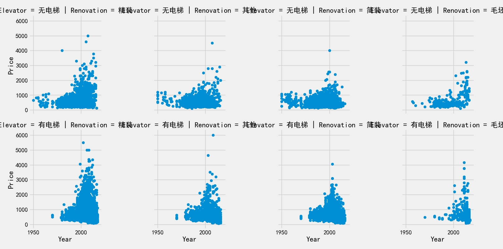
在Renovation和Elevator的分类条件下，使用 FaceGrid 分析 Year 特征，观察结果如下：
- 整个二手房房价趋势是随着时间增长而增长的；
- 2000年以后建造的二手房房价相较于2000年以前有很明显的价格上涨；
- 1980年之前几乎不存在有电梯二手房数据，说明1980年之前还没有大面积安装电梯；
- 1980年之前无电梯二手房中，简装二手房占绝大多数，精装反而很少
2.7 Floor 特征分析
f, ax1= plt.subplots(figsize=(20,5))
sns.countplot(x='Floor', data=df, ax=ax1)
ax1.set_title('房屋户型',fontsize=15)
ax1.set_xlabel('数量')
ax1.set_ylabel('户型')
plt.show()
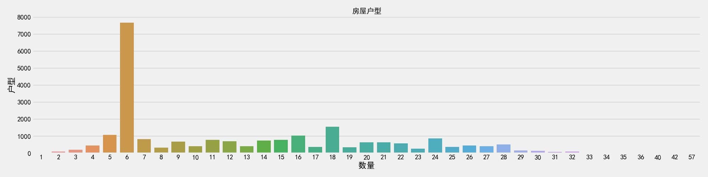
可以看到，6层二手房数量最多，但是单独的楼层特征没有什么意义，因为每个小区住房的总楼层数都不一样，我们需要知道楼层的相对意义。另外，楼层与文化也有很重要联系，比如中国文化七上八下，七层可能受欢迎，房价也贵，而一般也不会有4层或18层。当然，正常情况下中间楼层是比较受欢迎的，价格也高，底层和顶层受欢迎度较低，价格也相对较低。所以楼层是一个非常复杂的特征，对房价影响也比较大。
2.8 总结
本次分享旨在让大家了解如何用Python做一个简单的数据分析，对于刚刚接触数据分析的朋友无疑是一个很好的练习。不过，这个分析还存在很多问题需要解决，比如：
- 解决爬虫获取的数据源准确度问题；
- 需要爬取或者寻找更多好的售房特征；
- 需要做更多地特征工程工作，比如数据清洗，特征选择和筛选；
- 使用统计模型建立回归模型进行价格预测